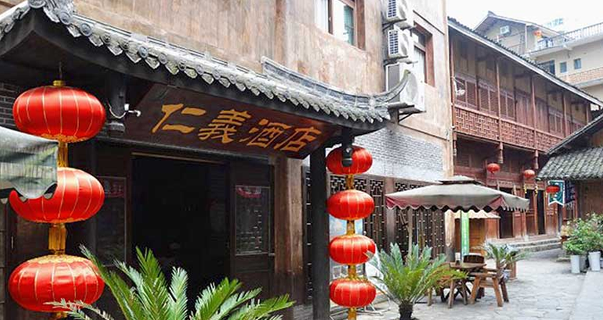
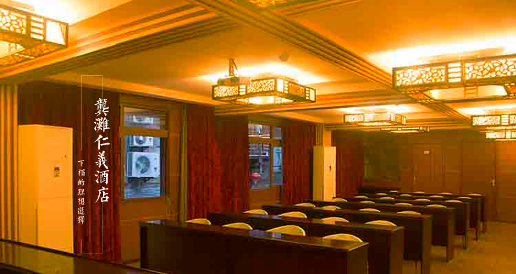

The ancient town of gong tan has been the transit station of sichuan, qian, xiang and e, which is the golden port of chongqing to the wujiang river. Dongkou lingkou, tianwu, west and guizhou along the river are bounded by the Central Line of wujiang river, south to the back plateau, and north to the home of pengshui. The town covers an area of 133 square kilometers.

Wujiang baili gallery has a long history and a rich culture. The ancient town of gong tan has a history of more than 1,700 years. In ancient times, the cave was built in the warring states period. The saddle city is the site of the southern song dynasty. Differential person suspension was buried is south of the eastern han dynasty minority differential of customs, people towpaths long history, great tide ", "bamboo zero poetry recess" accumulate cultural relics such as heavy, considerable research value。It is the west gate scenic spot, which is the cradle of west lankop and wax dyeing. Ancient tujia back marry crying marriage, the unique corn lamp, Yang play, horse lantern, young men and women express love folk "konoha love song", many folk handicrafts, has formed a unique local folk customs。
YouYang County Gong Tan ancient town is located in chongqing, the pictureque bank of wujiang river in the gallery, 270 km away from chongqing city proper. Humanities and rich natural resources, unique from the shu, built in the tang dynasty, has been 1700 years, a further profound historical five-arched, an enduring frontier town, about 2 km long green flag and support on a rocky cliff in the ancient town of pure wooden diaojiao building is Gong Tan two architectural features, by experts hailed as "wonderful work" in the history of architecture, is filming several content creationThe series of dramas such as the wulingshan, zhao shiyan, the strange people, the Chinese people, and the people of tongzi, etc., were taken here. Painting master wu guanzhong was produced in the old street, was named the famous historical and cultural town, chongqing's ten is folk customs tourism one of the best places to chongqing southeast region.

The qingstone street of gong tan ancient town is like jade, the whole town is connected, the street is an ancient and ancient color, and the wooden suspension building that is high on the cliff; It is an ideal scenic spot for visiting, hunting and exploring. Wujiang river along the river in guizhou, unitary Yang, peng, more than 100 km, is known as the wujiang river, thyme gallery, gallery in wujiang river scenic area of the wujiang river houseboat can see the beautiful scenery, feeling Gong Tan town one thousand years precipitation, Gong Tan righteousness and tujia diaojiao building style hotel
Gong Tan is Chinese history and culture of ancient town, the famous historical and cultural towns of chongqing first, the national AAAA level scenic spots, the gallery of wujiang river, the core scenic area and the shining pearl, chongqing famous tourist resort.。